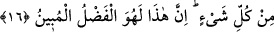

Bir adam Rasûlullah (s.a.)’e amellerin en fazîletli olanını sordu. Rasûlullah (s.a.):
“Allah’ı bilmek (el-ilmü billâh) ve dîninde ince anlayış sâhibi (fıkh) olmak.” buyurdu.
Adam bir kaç kez sorusunu tekrarladı ve sonunda: “Yâ Rasûlallah! Ben sana amelden
soruyorum, sen ilimden haber veriyorsun.” dedi. Bunun üzerine Rasûlullah (s.a.):
“İlimle işlediğin az amel sana fayda verir. Cehaletle işlediğin çok amelin ise sana
faydası olmaz.” buyurdu.[45]
İlim sâhibi olmayan âbid, değirmen taşını döndüren merkebe benzer. Döner durur ama
yol alamaz.
Feth el-Mevsılî (k.s.) der ki: “Hasta kimseden yiyecek, içecek ve ilaç men’ edildiği
zaman ölmez mi? İşte kalb de böyledir. Ondan ilim, hikmet ve tefekkür men olununca o
da ölür.”
Zâhir gıdalarla karnında tıka basa dolmak, bâtın gıdalarla beslenmeye mâni olur.
Nitekim Şeyh Sa’dî (r.h.) şöyle der: “Dervişin biri akşam yemeğinde on batman yemek
yerdi ve seher vaktine kadar da namazda Kur’ân’ı hatmederdi. Onun bu durumundan
haberdar olan gönül erlerinden biri şöyle dedi: “Yarım ekmek yiyerek yatıp uyusa
bundan daha iyi olurdu.”
Mideni tıka basa doldurma ki marifet nuru girsin
Ağzına kadar doldurduğundan midende hikmete yer kalmamış
Kezâ kendini beğenmek ve kibir de nûra ve safâya (kalbin temizlik ve huzûruna)
engeldir. Nitekim yine Sa’dî, Bostân’da şöyle der:
Su dolu bir kandil gibi kendi benliğinle dolmuşsun
Bu halde iken mum gibi nasıl parlarsın?
Kişi şerîatla zâhirini, tarîkatla bâtınını ıslâh edince, nebîlere ve velîlere verilen,
onların bu sâyede kendi zamanlarındaki mü’minlerden üstün kılındıkları ilmin feyzine
istîdadlı olur. Bu üstün kılma, Allah Teâlâ’ya daha fazla hamd ve şükre sebeptir. Çünkü
senâ, mevhibe/bağış ve ihsan mikdârıncadır.
Allah Teâlâ’ya nimet ve ihsanlarından dolayı hamd ederiz. İlmimizi ve ilim
denizinden bize verdiği damlaları artırmasını niyâz ederiz. Tahkîk yolunda muvaffak
kılmasını, hevâyı dizleyen ve şehvetleri engelleyen öldüren faydalı ilimle birlikte sâlih
amelde bize sebat vermesini dileriz. Çünkü lütfeden, nimet veren, kerem sâhibi, bol bol
ihsân eden, bol bol veren ve çok merhametli olan O’dur.